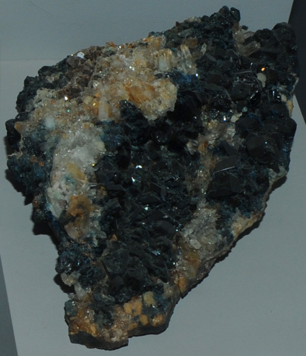

|

| (Mg,Fe)Al2(PO4)4(OH)
This sample of lazulite is displayed in the Smithsonian Museum of Natural History. Lazulite is a phosphate mineral of aluminum, magnesium and iron with the composition (Mg,Fe)Al2(PO4)4(OH). The sample at left is about 10 cm across and is from Rapid Creek, Yukon Territory, Canada. This sample is described as lazulite with quartz and siderite.
|